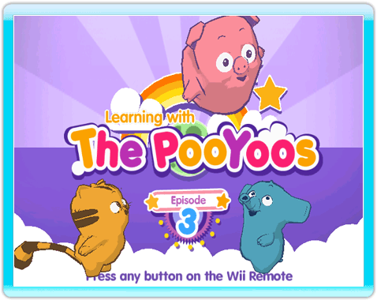
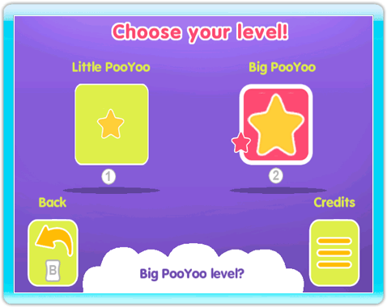
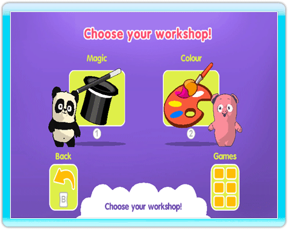
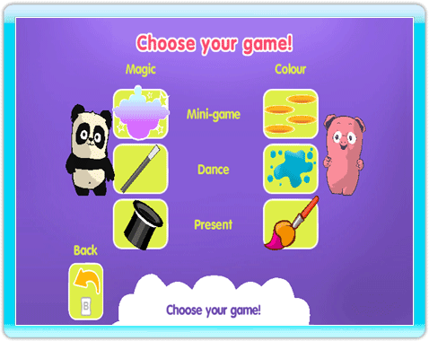

-
Starting a game
On the Channel screen, point at START and press the A Button to launch the game and access the title screen.
-
Title screen
Press any button to enter the PooYoos' universe.

-
Learning level
First, choose the learning level adapted to the child's age: Little PooYoo for younger children, and Big PooYoo for older children. To do this, select one of the two images with the pointer and then press the A Button to validate. You can also validate the difficulty level directly by pressing the 1 Button or the 2 Button: 1 Button for Little PooYoo, 2 Button for Big PooYoo.

-
Choice of workshop
Once you have selected your difficulty level, the Workshop Selection menu appears. Select a workshop using the pointer, then press the A Button to start the workshop. You can also access a workshop directly by pressing the 1 Button, to start the magic workshop, or the 2 Button, to start the colour workshop.

-
Choice of activity
If your child wants to play a specific activity, aim at the Games picture at the bottom right and press the A Button to access the Game Selection menu.

|
|
|